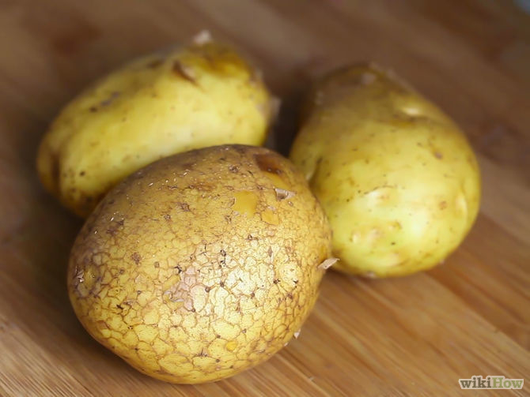
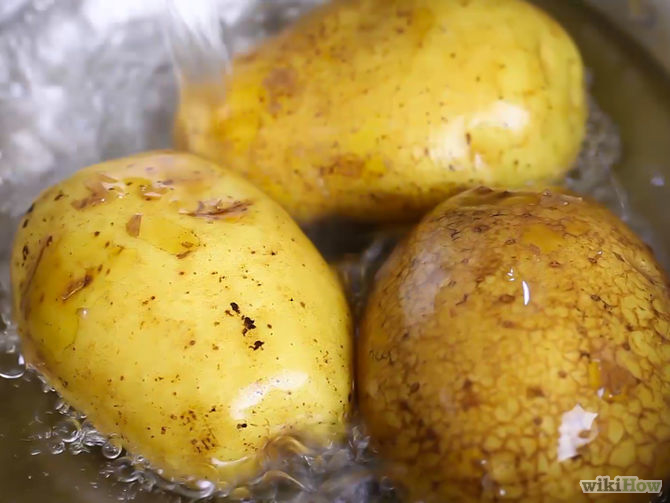
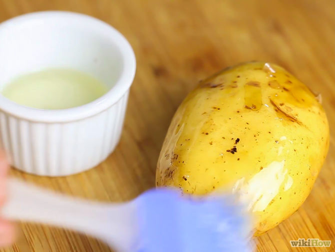
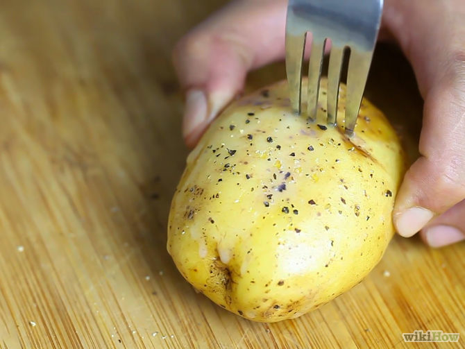
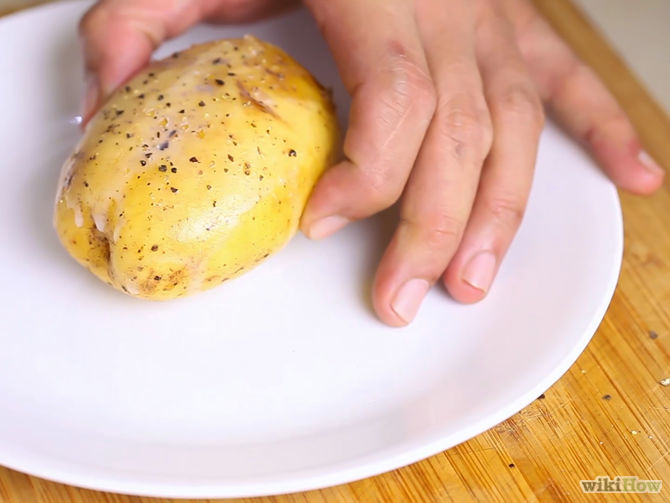
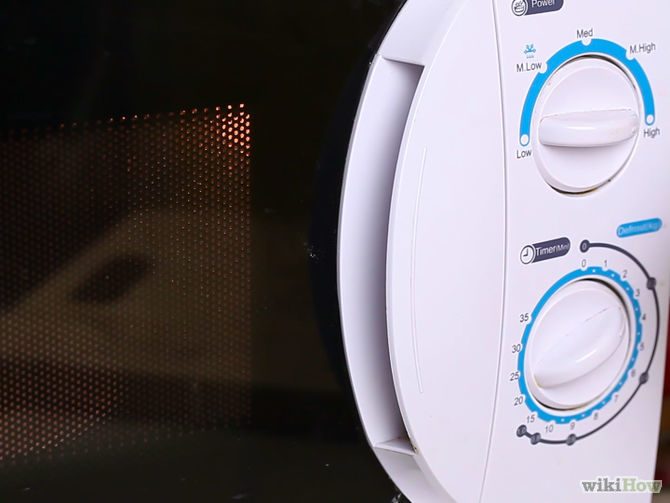
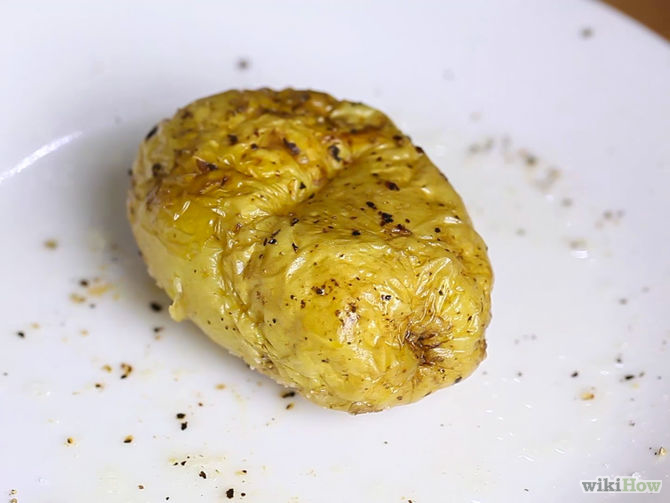

How to Bake a Potato in the Microwave
Want to eat a steaming baked potato for dinner, but don't have the time or patience to put it in the oven for an hour? Bake it in the microwave! You'll have a delicious, fluffy baked potato in 15 minutes or less.
Choose the right type of potato. Russet potatoes - also known as Idaho or baking potatoes - are the best potatoes for baking in the microwave. This is due to their high starch content, which yields extra fluffy baked potatoes. If you don't have Russets, the next best thing are yellow-fleshed potatoes - such as Yukon Gold - which are moderately starchy and yield a creamy, slightly dense baked potato.
Wash the potato. It is important to give your potato a good wash before microwaving, especially if you're planning on eating the skin. Be sure to remove any stubborn dirt. If you have one, a bristled scrubbing brush is great for cleaning potatoes. After washing, pat the potato dry with a clean paper towel.

Season the potato. Rub a little olive oil into the skin of the potato, then sprinkle with salt and pepper. This gives the potato a little extra flavor and will help to crisp up the skin.

Prick the potato with a fork. This allows steam to escape and prevents the potato from exploding in the microwave. You should aim to prick the potato three or four times on each area: top, bottom, and two sides. Alternatively, you can cut a deep "X" onto the top of the potato, using a knife.

Place the potato on a microwavable plate. If you want, you can wrap the potato in some wet paper towel first. This will help to keep the potato moist and prevent it from shrinking, but it will also result in softer skin.

Put the plate in the microwave and choose a cooking time. Cooking times will vary depending on the size of the potato and the power of the microwave. Most medium to large potatoes will take between 8-12 minutes to cook at full power.
- Try putting the potato in for 5 minutes to begin with, then take it out and turn it over so that both sides cook evenly. Place it back in the microwave for another 3-5 minutes, depending on how soft it is already. After that, if it still doesn't feel fully cooked, continue to microwave it in 1 minute bursts, checking after each minute.
- If you are cooking multiple potatoes at once, you will need to increase the cooking time by about two-thirds. For example, if one large potato takes 10 minutes to cook, two large potatoes would take between 16-17 minutes.
- If you prefer crispy skinned potatoes, you can cook the potatoes in the microwave for 5-6 minutes, then transfer to a baking sheet and bake in an oven preheated to 400 degrees F for 20 minutes. This method is great if you want oven-crisp potato skins, in less than half the normal cooking time!
Check if the potato is cooked. You can check if a potato is cooked by sticking a fork in the center; if the fork goes in easily, but the center is still a little firm, the potato is ready. When in doubt, it is best to err on the side of undercooking, as an overcooked potato may burn or explode in the microwave.

Let the potato rest for five minutes. This allows the core of the potato to finish cooking using the heat that is trapped in the inner layers. It also helps it to become fluffy on the inside without over-drying on the outside. Wrapping it in aluminum foil after taking it out of the microwave will speed up this process. Just be careful when touching the potato - it will be extremely hot!
- If you are saving a potato for someone who's running late, wrapping the potato in aluminum foil will keep it warm for a remarkably long time. Just be sure to do this as soon as it comes out of the microwave, to conserve as much heat as possible.
Serve the potato. Cut the potato open and garnish it with your favorite toppings. Keep it simple with butter, salt and a little grated cheese, or jazz it up with some sour cream, green onions or chives and some crispy bacon. For a more complete meal, top the potato with a generous helping of chili con carne or some fluffy scrambled eggs.
Tips
- Some microwaves have a "baked potato" button; use that when in doubt.
- If you are in a rush, you can cut open the potato immediately after the microwave stops, add your toppings (or not), and then do the final cooking in the microwave by microwaving another 30 to 60 seconds.
- Using a rotating carousel for microwaving is the best way to get the potato evenly cooked all around. If you don't have a rotating carousel, pause your microwave twice during the microwaving time, and manually turn the potato a half turn each time. To decide when to turn the potato, divide the cooking time into 3 fairly equal units.
- Lengthen the time when using microwaves with less power. An 800 Watt microwave requires 1.5 times the microwaving time.
- Try using parchment paper to wrap the potato, which can be saved and re-used.
- You can "boil" potatoes for mashing more or less the same way. Use thin-skinned potatoes and be extra careful not to dry them out. Plastic wrap or simply cooking several in a plastic bag helps.
Warnings
- The plate will be rather hot from the microwave, so use a towel or oven mitt to take it out.
- Do not wrap the potato in metal foil while it is inside the microwave; this could cause sparking that damages the interior surface of your microwave.
Link
http://www.wikihow.com/Bake-a-Potato-in-the-Microwave